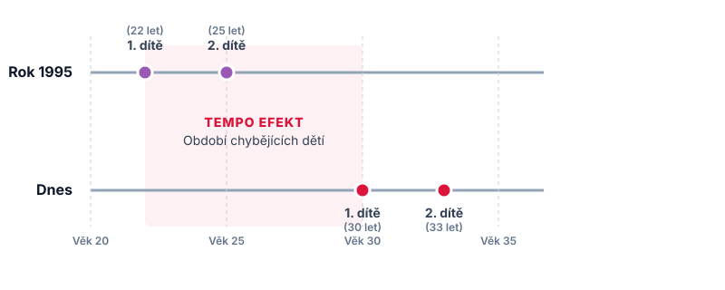

Číslo, kterým se leckdo ohání v politických debatách, ale málokdo zná jeho reálný obsah. Přitom ukazatel úhrnné plodnosti by nás měl zajímat víc než sliby o záchraně národa.
Aktuální hodnota 1,28 znamená, že ženy za celý svůj reprodukční věk (statisticky vymezený intervalem 15 až 49 let) porodí průměrně méně než dvě děti. Lze to vyjádřit i tak, že na čtyři ženy připadá v průměru pět dětí.
To je oproti stavu před deseti lety drastický propad. Jestliže se nedávno česká společnost blížila k evropským průměrům, nyní se vracíme k hlubokému propadu z konce devadesátých let, kdy zakládání rodin brzdil ekonomický šok z transformace.
Statistiky dále říkají, že v loňském roce se u nás narodilo 77,6 tisíce dětí. Jde o absolutní minimum od dob, kdy se na našem území – konkrétně od roku 1785 – začaly vést plošné statistiky. Zásadní roli v tom hraje i fakt, že je aktuálně méně žen v reprodukčním věku než před deseti lety. Silné generace Husákových dětí už své rodiny založily a nastupující ročníky matek jsou početně mnohem slabší.
Podívejme se ale blíž na samotnou plodnost a to, co vlastně měří.
Konstrukce umělé ženy. Abychom pochopili vážnost situace, musíme definovat, jak číslo 1,28 vzniká. Úhrnná plodnost (Total Fertility Rate) představuje teoretický model.
Ukazuje, kolik dětí by se v průměru narodilo jedné ženě, pokud by se po celý její reprodukční věk udržela míra plodnosti přesně na hodnotách toho jednoho konkrétního sledovaného roku.
Tato statistická momentka do sebe nasává nejen to, kolik dětí se rodí, ale hlavně kdy se rodí. Pokud se celá generace třicátnic rozhodne odložit založení rodiny o dva roky kvůli drahým hypotékám nebo ekonomické nejistotě, úhrnná plodnost se v daném roce okamžitě propadne do hlubin. A to i v případě, že tyto ženy své děti nakonec mít budou. Demografové tomu říkají „tempo efekt".

Tempo efekt: posunutí věku rození dítěte způsobuje v daném roce pokles statistické plodnosti, i když ženy nakonec děti mít budou.
Proč politici neustále opakují hodnotu 2,1? Jde o hranici prosté reprodukce. Pokud má vyspělá společnost úhrnnou plodnost 2,1, její populace – bez započítání migrace – přirozeně neubývá ani nestárne. Dvě děti nahradí své dva rodiče a ta desetina navíc vyrovnává fakt, že se rodí o něco více chlapců než dívek a že ne každý se dožije dospělosti.
Slibovat dnes rychlý návrat k hodnotě 2,1 je politická utopie. Většina západního světa tuto hranici dávno opustila a už se k ní s největší pravděpodobností nevrátí. Česká realita 1,28 nás řadí k zemím, které nezažívají chvilkový výkyv, ale hlubokou společenskou transformaci.
Než se z čísla 1,28 stane politický nástroj, je třeba říci, že pokud by snad někdo chtěl opět začínat s rétorikou o záchraně vymírajícího národa, je třeba vidět, co se dělo doteď. Při pohledu na dosavadní kroky politiků (žen je u moci dlouhodobě jen zhruba pětina, přestože tvoří polovinu populace a přestože mají k tématu zakládání rodin a péče nejen o potomky rozhodně co říci) není namístě doufat, že se tento trend zvrátí, natož to dokonce slibovat.
Když demografická křivka padá, je snadné obvinit mladou generaci z pohodlnosti. Tvrdá data ukazují jiný příběh. Aktuální pád na historické dno má jasné strukturální kořeny.
Fyzický úbytek matek. Ocitli jsme se ve fázi, kdy se do věku s nejvyšší plodností dostávají ženy narozené na přelomu tisíciletí. Těchto žen je fyzicky o třetinu méně než matek, které rodily před deseti lety (tzv. Husákových dětí). I kdyby měly stejný počet dětí jako předchozí generace, absolutní počet narozených dramaticky klesne.
Bydlení jako antikoncepce. Narážíme na limity infrastruktury. Radikálně nedostupné bydlení posouvá narození prvního dítěte do stále vyššího věku. To má fatální důsledek: biologicky se tím často uzavírá okno pro narození dítěte druhého či třetího.
Intenzivní rodičovství. Nároky na výchovu, vzdělání a finanční i časové zabezpečení dětí extrémně vzrostly. Dnešní rodiče raději investují maximum svých prostředků a času do jednoho či dvou potomků, než by své zdroje dělili mezi tři.
Číslo 1,28 tak funguje jako nekompromisní audit životních podmínek v zemi. Ukazuje, jak tvrdý je trh s bydlením, jak neflexibilní je systém zkrácených úvazků a předškolní péče a jak velkou ekonomickou tíhu cítí lidé na prahu třicítky.
Pokud chce budoucí premiérka pozitivně pohnout s děním v Česku, nezbyde než opustit plané řeči o záchraně vymírajícího národa.